Industry Enhancements
The industry window and the statistics window's Industries tab leave out much of what decides an industry's output: the canning factory's second recipe shows the first one's figures, workers who don't count for the worker boost appear nowhere, and nothing says when a farm or mine will grow. This mod corrects the figures, lists every worker and what each one is doing, shows when raw producers next try to grow, and gives the Industries tab columns, a cargo filter and a mark for industries that can't expand.
Industry window
Recipe Figures
Setting: Recipe Figures · On by defaultWellington Canning Factory runs both recipes, fish or meat, each with sheet metal, into cans.
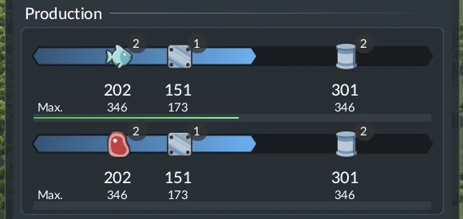
- 1The meat row repeats the fish row's 202: the game shows the first recipe's figures on every row.
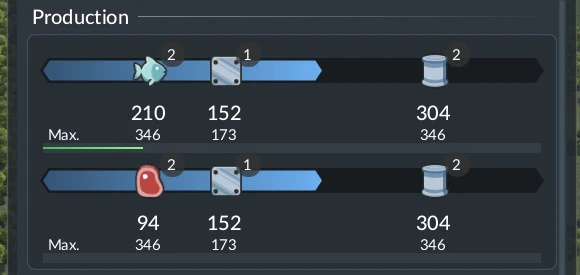
- 1The meat row's own figure: 94 meat a year.
- 2Sheet metal and cans, which both recipes use, show the industry's total on both rows.
Why
An industry with more than one recipe, such as the canning factory (fish or meat, each with sheet metal), shows the first recipe's figures again on later rows. The meat row repeats the fish figures, so you can't tell how much meat the factory takes.
What it does
Every recipe row of the Production card shows its own cargos' figures. A cargo both recipes use, such as sheet metal, shows the industry's total on each row.
Plot Growth
Setting: Plot Growth · On by default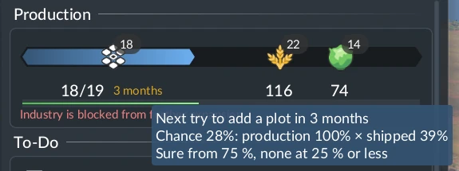
- 1Plots built of the most this farm may have: 18 of 19.
- 2The next try to add a plot, in 3 months. Yellow: it may succeed.
- 3The chance: 100 % production × 39 % shipped gives 28 %, on a scale from none at 25 % to sure at 75 %.
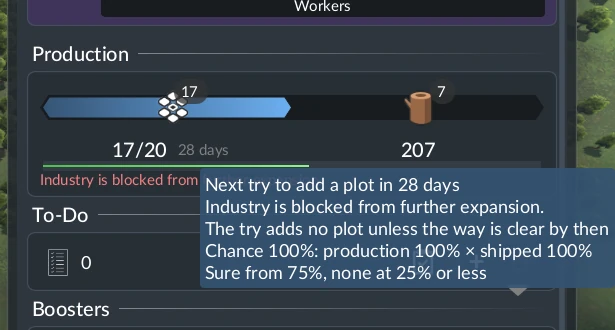
- 1The next try, in grey: the industry is blocked, so the try won't add a plot.
- 2The tooltip says so, and still gives the chance the try would have.
Why
A mine, farm or forest grows one plot at a time, which raises its output. The game tries every half year, with a chance from how well it produces and how much of its output your lines ship, and shows none of it.
What it does
Under a raw producer's plots, the Production card shows the plots built of the most it may have (15/20) and when the game next tries to add one (43 days): green when it will succeed, yellow when it may, grey when it can't.
Good to know
- The chance comes from production × the share your lines ship: none at 25 % or less, sure from 75 %.
- Point at the next try for the chance and what it is made of.
- Only raw producers grow; processing industries never do. Once every plot is built, the next try is left out.
- An industry blocked from further expansion still gets its tries, but a plot only comes when there is room for it.
Also in
The statistics Industries tab's Plots column (Industry Columns) shows the same.
Inactive Workers
Setting: Inactive Workers · On by default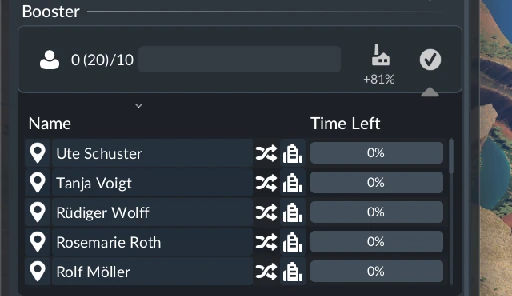
- 10 (20)/10: none came by line (they count for the boost), 20 more work here, 10 are needed.
- 2Each row: how the worker gets to work (walking, car or lines) and a button to their home.
- 3Workers who don't count for the boost are listed too, at 0 %.
Why
The worker boost counts only workers who arrived by your lines in the last 2 years. The Boosters card shows only their count and lists only them, so workers who walk, drive or stopped coming by line appear nowhere.
What it does
The Boosters card's count adds the others in brackets: 11 (8)/10 means 11 came by line, 8 more work there, and 10 are needed for the boost. The expanded list shows the others below at 0 %, each with how they get to work (walking, car or lines), or a button to the new workplace of a worker who now works elsewhere, and a button to their home.
How to use
- Open an industry with workplaces.
- Read the Boosters card's count; expand the card for the list.
Good to know
- The boost needs workers by line in half the workplaces: the last figure of the count.
- Point at a home button for the town; sort by it to group workers by town.
- With Worker Status on, the list shows Worker Status's columns instead.
Also in
The statistics Industries tab's Workplaces column shows the same count, with the filled workplaces in the tooltip.
Worker Status
Setting: Worker Status · On by defaultWellington Canning Factory in a 1998 save. Left is the game's Time Left, coloured from red to green; the (16) in the count comes from Inactive Workers.
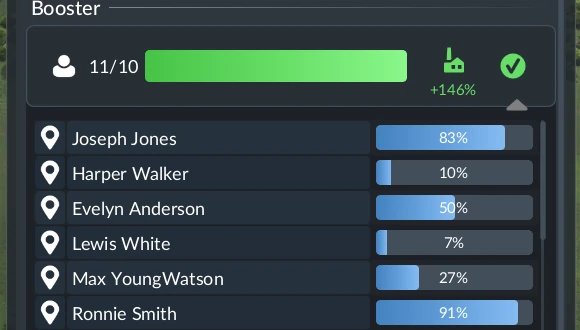
- 1The game lists each worker's name and Time Left, nothing about where they are.
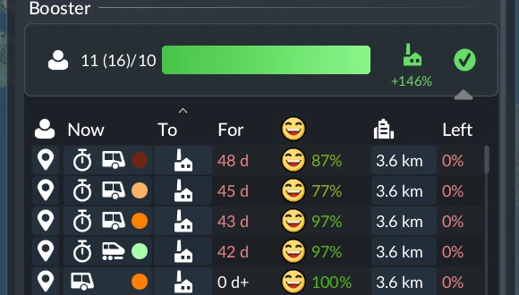
- 1Now: a stopwatch and a bus or train means waiting at a stop for it; the dot is the line's colour.
- 2To: where the trip goes, here this factory. Click it to open that building.
- 3For: days in that state. The three who wait have waited over 30 days, so it is red; a dash means the state began before this session, so the days are unknown.
- 4The worker's happiness, as the person window shows it.
- 5The distance to the worker's home town. Click it to open the home.
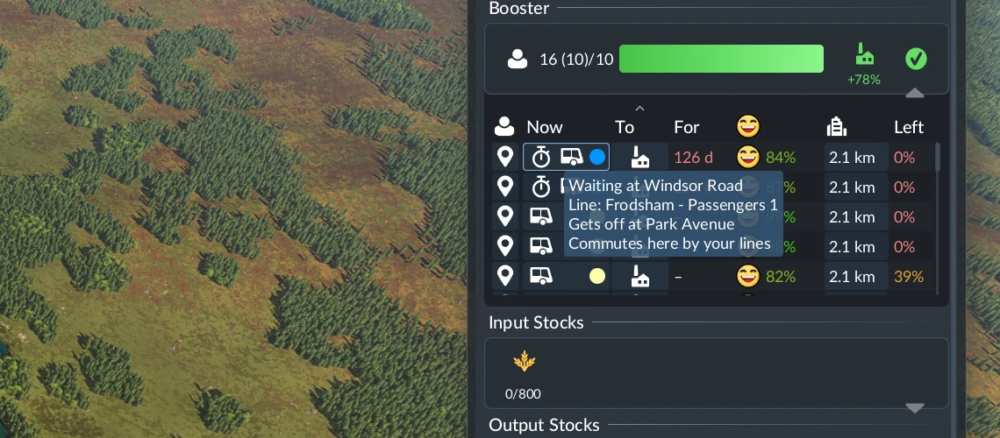
- 1The line, the stop and where the worker gets off: waiting at Windsor Road for Frodsham - Passengers 1.
- 2126 days waiting, in red: past 30 days the wait makes people unhappy.
Why
The worker list says who works here, not what they are doing: stuck at a stop for months, walking, or already at work.
What it does
The Boosters card's worker list shows what each worker is doing now: at home, shopping or at work (green), walking, driving, waiting at a stop (a stopwatch and the vehicle they wait for), or riding, with a dot in the line's colour. Then where the trip goes, for how many days, the worker's happiness, how far their home town is, and Time Left as a % from red (0 %) to green (100 %).
Good to know
- Point at Now for the line, the stop and where the worker gets off; click it to open the worker's window.
- Click the trip's destination to open that building. A grey workplace marks a worker who now works elsewhere.
- A wait over 30 days shows in red, since it makes people unhappy. "12 d+" means the list didn't see the state begin.
- Point at the home distance for the town, click it to open the home, or sort by it to see who comes from the same town.
- The name moves into the location button's tooltip. The list starts with the workers on their way here, the longest under way first, and every column sorts.
Statistics window
Industry Columns
Setting: Industry Columns · On by default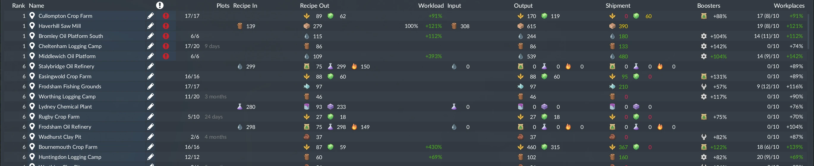
- 1Plots: plots built of the most the producer may have, then the next try to grow, coloured as in the Production card.
- 2Recipe In and Recipe Out: each cargo a year at the recipe's base rate, without boosts. This oil refinery makes three products from 231 crude oil.
- 3Workload, then the boosts on now in green: this farm's +57 % is its worker boost.
- 4Input, Output and Shipment: an icon and an amount per cargo.
- 5Boosters: how much faster each cargo booster makes production, green while it is on. Workplaces adds the worker boost after the worker count.
Why
The game's Industries tab gives Input, Output and Shipment as one number each and the boosters as icons. How much of each cargo an industry takes or makes, how much a booster adds and how large a raw producer may grow are only in each industry's window, so comparing industries means opening them one by one.
What it does
The Industries tab gets the columns Name, Problems, Plots, Recipe In, Recipe Out, Workload, Input, Output, Shipment, Boosters and Workplaces. Recipe In and Recipe Out give each recipe's cargos a year without boosts, a line per recipe. Input, Output and Shipment show an icon and amount per cargo. Boosters and Workplaces show how much each booster and the worker boost add to production, in green while on.
Good to know
- Plots shows a raw producer's plots built of the most it may have (5/8) and the next try to grow, as Plot Growth does in the Production card. Sort by it to find the producers that can grow largest.
- Input is about Recipe In × Workload × (1 + boost). The boosts on now show in green beside Workload.
- Recipe In and Recipe Out sort by the largest cargo, Input, Output and Shipment by the sum. Boosters and Workplaces sort the boosts that are on first, then by how much they add.
- Requirements is left out, since Input shows the same cargos.
Statistics Totals
Setting: Statistics Totals · On by defaultThe four canning factories of a 1998 save; only Wellington Canning Factory runs, on both recipes. With the mod, Industry Columns is on too, so each recipe gets a line.
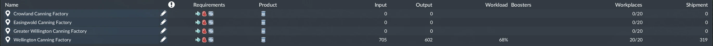
- 1Input 705 counts the first recipe's 202 fish and 151 sheet metal twice, once per recipe.
- 2Output 602: the 301 cans, counted once per recipe.
- 3Workload 68 %: that input against both recipes' maximum added together.
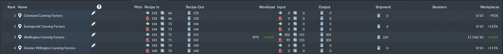
- 1Input counts each cargo once: 210 fish, 94 meat and 152 sheet metal. Sheet metal, which both recipes use, shows its total on both lines.
- 2Output: 304 cans, on both lines since both recipes make them.
- 3Workload 88 %: the input against the largest recipe running all year with the boost on now, since the factory runs one recipe at a time.
Why
The game counts a cargo once per recipe that uses it and takes later recipes' figures from the first, so the canning factory's Input reads about twice what it takes. Its Workload compares that with both recipes at once, though an industry runs one recipe at a time.
What it does
The statistics Industries tab counts each cargo once in Input and Output, and Workload compares against the largest recipe.
Good to know
- Industries with one recipe and no booster show the same figures as before.
- With Industry Columns on, Input and Output show a line per recipe, and a cargo both recipes use shows the industry's total on each line.
Blocked Expansion
Setting: Blocked Expansion · On by default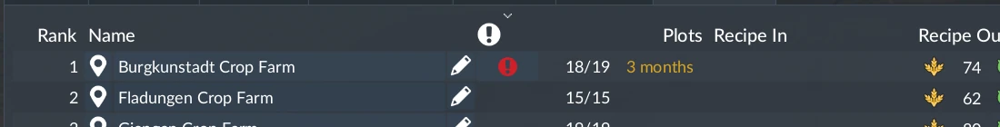
- 1The mark: Burgkunstadt Crop Farm is blocked from further expansion. Click it to open the farm.
- 2Sort by the Problems column to bring blocked industries to the top.
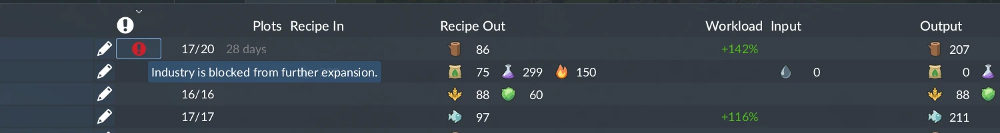
- 1The mark: this logging camp is blocked from further expansion.
- 2Its tooltip, the same message the industry window shows.
- 3The plots column's next try is grey: a blocked industry adds no plot.

- 1The game's own message, which it shows only here, in the industry window.
Why
Only the industry's own window says it can't grow. The mark makes blocked industries easy to find and sort together.
What it does
The statistics Industries tab's Problems column marks industries blocked from further expansion; click the mark to open the industry, which shows what is in the way.
Good to know
- Click the mark to open the industry; its window shows the blocked area on the map.
- The mark goes away once the way is clear, as the industry window's message does.
Cargo Filter
Setting: Cargo Filter · On by default
- 1The cargo list, left of the eye. All Cargo shows every industry.
- 2Each cargo as its icon. Pick one to keep only the industries that need it, boost with it or make it.

- 1Only the industries that use or make the picked cargo are left, here cement plants: stone in, cement out.
Why
The Industries tab lists every industry on the map. Finding the ones that take or make one cargo means reading the icons row by row.
What it does
The statistics Industries tab gets a cargo list next to the eye: it shows only the industries that need, boost with or make the chosen cargo.
Good to know
- All Cargo shows every industry again.
- It works together with the eye and the search, and keeps your choice until you quit the game.
Settings
Choosing a save's mods: the gear next to Industry Enhancements → Settings. Each save keeps its own choice. Off turns a feature off completely.
| Setting | Default | What it does |
|---|---|---|
| Recipe Figures | On | In an industry's Production card, every recipe row shows its own cargos' figures (stock repeats the first recipe's); a cargo two recipes share shows its total. |
| Plot Growth | On | The industry window's Production card shows under a raw producer's plots the most it may have and when the game next tries to add a plot (green sure, yellow maybe, grey no chance or blocked from further expansion). |
| Inactive Workers | On | The booster card and the statistics Industries tab's Workplaces column also count the workers who don't count for the worker boost (they walk, drive or haven't come by line in 2 years); the booster card lists them with how they get to work and their home. |
| Worker Status | On | The booster card's worker list shows what each worker does now (at home, shopping, at work, walking, driving, waiting for or riding a bus, tram, train, ship or aircraft, with the line on hover), where the trip goes, for how many days, the worker's happiness, how far their home town is, and Time Left as a coloured %; the name moves into a tooltip. |
| Industry Columns | On | The statistics Industries tab shows plots, each input and output a year without boosts (Recipe In / Out), the boosts on now beside Workload, input, output and shipment per cargo, and each booster's and the worker boost's production increase (green while on); Requirements is left out. |
| Statistics Totals | On | The statistics Industries tab counts each cargo once in Input and Output, and Workload compares against the largest recipe. |
| Blocked Expansion | On | The statistics Industries tab's Problems column marks industries blocked from further expansion; click the mark to open the industry, which shows what is in the way. |
| Cargo Filter | On | The statistics Industries tab gets a cargo list next to the eye: it shows only the industries that need, boost with or make the chosen cargo. |
| Logging | Off | Writes the mod's messages to the game log (stdout.txt), for bug reports. |
More
Compatibility
Works alongside Cargo Enhancements and To-Do List, whose cards share the industry window, and Statistics Enhancements, whose Rank column and sorting work in the Industries tab too and whose Problem Buttons turn the Industries button red while an industry is blocked from further expansion.